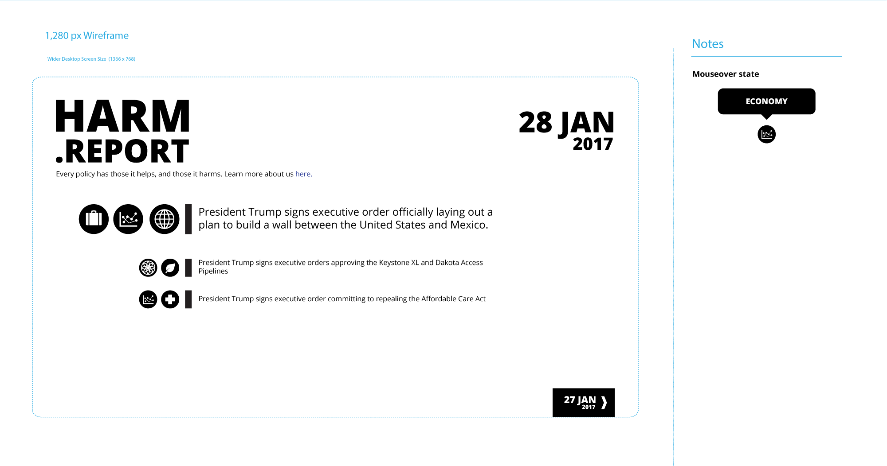

If you're seeing this page, you've likely been invited to contribute to Harm.Report. We could certainly use the help.
Every policy has those it helps, and those it harms. The Trump administration is moving at a rapid pace to enact policies to shift the country to align to their vision. While they trumpet the claimed benefits of those policies, Harm.Report seeks to act as as a day-by-day record of their harms.
Trump cares only about winning. We're here for the losers.
That's kind of the problem. At the time of this writing, the country is one week into the Trump administration, and the amount of news coverage of the implications of Trump policies is staggering and overwhelming.
Harm.Report is aimed at being a concise signal amidst the noise, a place to quickly and easily parse and digest the daily horrors. It is also intended to help focus the conversation about these policies upon those who will be harmed by them.
Plan A is to have a core set of news junkies and policy wonks filter through the news, and submit Reports to be listed.
Here's a (very) early sketch of what the site might look like:
Here's an example Report:
Good question. What are you good at? How do you want to help?
The first and most pressing need will be for Reports. Sign up, and let's get started.
Fuck no, are you kidding? Have you seen Twitter recently? There are actual Nazis out there.
To start, everyone will be able to contribute anonymously. I, the person who probably sent you the invitation to this project, will know who you are. If you don't mind other contributors knowing who you are, toggle 'no' in the appropriate area on the signup sheet. I'd like to keep the contributor pool lower than a dozen to start, and you all probably know each other anyway.
At some future date, we can discuss whether or not to disclose our identities, but I won't do that without explicit permission.
Button at the top. Fill out the form, and you'll be invited to the Google domain, given an email address, and an invitation to the Slack organization.
{kind=link}